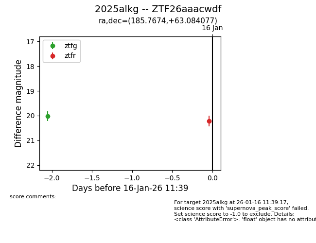
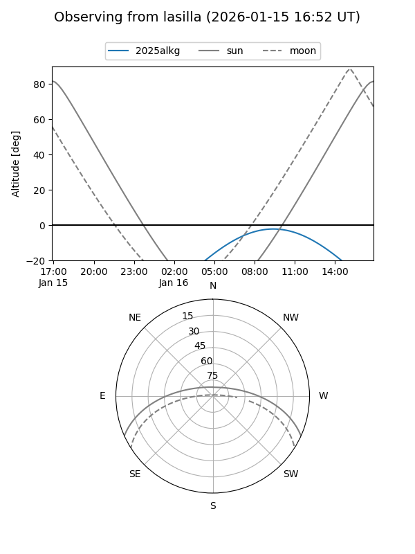
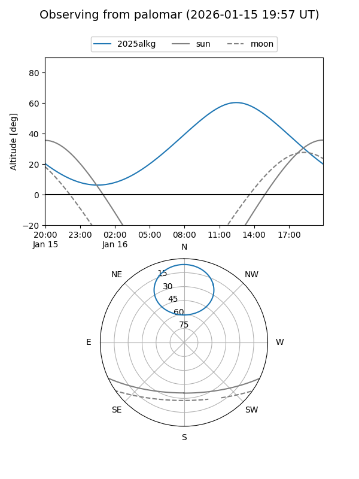
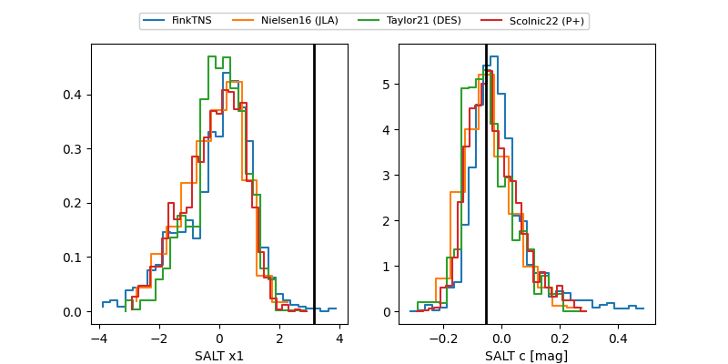

2025alkg
Target 2025alkg at 2026-01-16 11:40
Aliases and brokers:
FINK: link
Lasair: link
ALeRCE: link
TNS: link
YSE: link
alt names
ZTF26aaacwdf (ztf,fink_ztf)
2025alkg (tns,yse)
Coordinates:
equatorial (ra, dec) = 185.7674,+63.08408
equatorial (HMS+DMS) = 12:23:04.18,+63:05:02.68
galactic (l, b) = (128.3548,+53.74447)
Flags:
Photometry:
last ztfg=20.03, ztfr=20.21
1 ztfg, 1 ztfr detections
Lightcurve

Visibility


Additional plots
